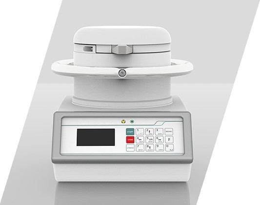

ВЗАИМОДЕЙСТВИЕ ГАММА-ИЗЛУЧЕНИЯ С ВЕЩЕСТВОМ
Цель работы: изучение механизмов взаимодействия гамма-излучения с веществом; проверка закона ослабления потока гамма-квантов, проходящего через поглотитель; определение массового коэффициента ослабления вещества и энергии гаммаквантов радиоактивного источника.